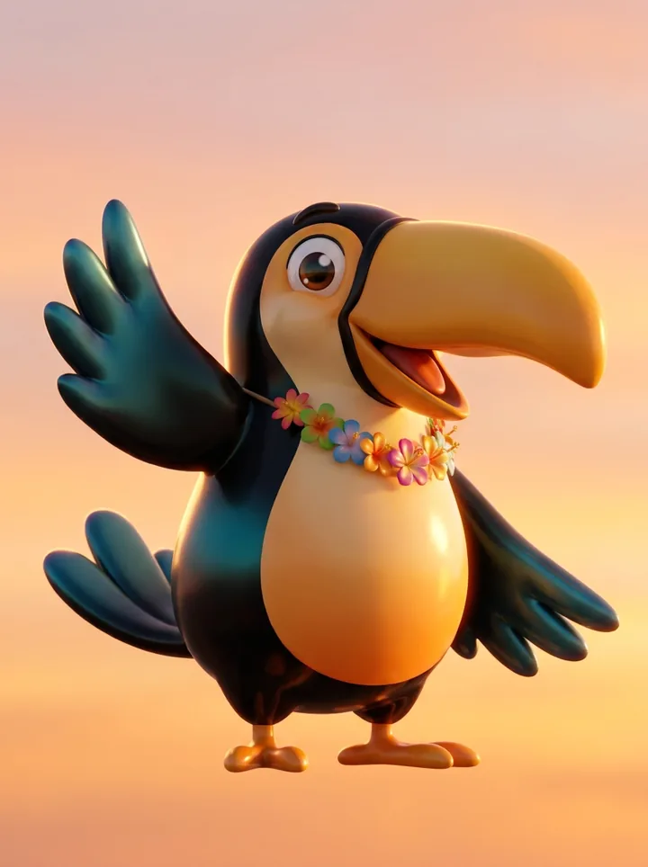
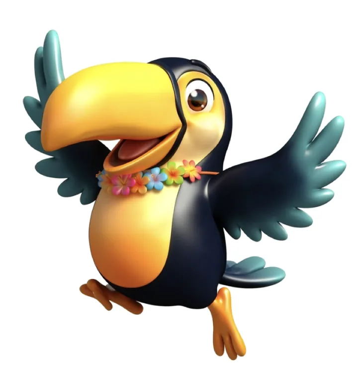

Bria
Image generation trained on licensed data
- Tested
- I re-posed the approved Mango through my own tool on the Bria API. Same character, a new pose, no redraw.
- Why
- For a public company the question is less which model looks best and more which output legal can approve. Indemnified generation removes that blocker.
- Limit
- Its raw aesthetic trails the frontier models, so it is the production and editing layer, with exploration done elsewhere.